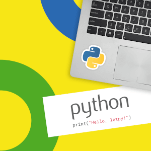

Теория и практика. Быстрая проверка задач и подсказки к ошибкам на русском языке. Работает в любом современном браузере.
Сегодня я расскажу о таком типе данных, как списки, операциях над ними и методах, о генераторах списков и о применении списков.
Списки в Python - упорядоченные изменяемые коллекции объектов произвольных типов (почти как массив, но типы могут отличаться).
Чтобы использовать списки, их нужно создать. Создать список можно несколькими способами. Например, можно обработать любой итерируемый объект (например, строку) встроенной функцией list:
Как видно из примера, список может содержать любое количество любых объектов (в том числе и вложенные списки), или не содержать ничего.
И еще один способ создать список - это генераторы списков. Генератор списков - способ построить новый список, применяя выражение к каждому элементу последовательности. Генераторы списков очень похожи на цикл for.
Но в сложных случаях лучше пользоваться обычным циклом for для генерации списков.
Нужно отметить, что методы списков, в отличие от строковых методов, изменяют сам список, а потому результат выполнения не нужно записывать в эту переменную
Изредка, для увеличения производительности, списки заменяют гораздо менее гибкими массивами (хотя в таких случаях обычно используют сторонние библиотеки, например NumPy).